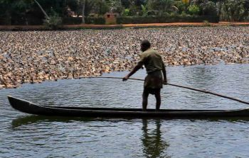
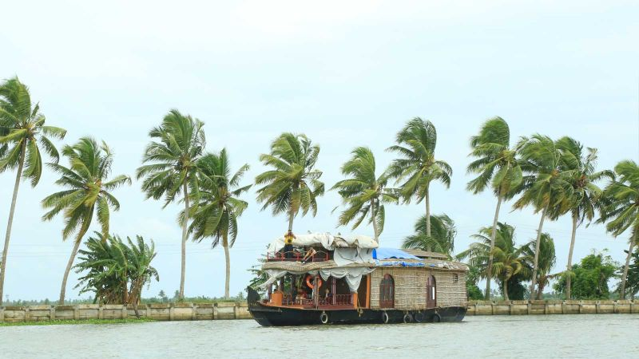
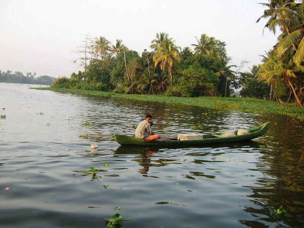
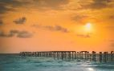

Welcome...
Explore and Enjoy...
ALAPPUZHA
Often compared to Venice due to its abundance of canals, Alappuzha is the gateway to the backwaters of Kerala. Etymologically speaking the word Alappuzha is derived from two words, Ala and Puzha. According to Dr. Gundert the German Lexicographer, Ala means broad and Puzha is river. It is a Land Mark between the broad Arabian sea and a network of rivers flowing into it.